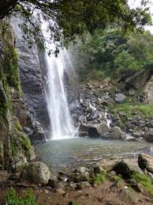
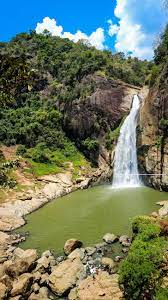
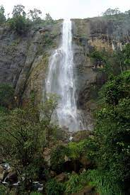
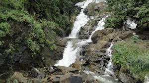
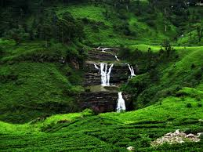

|

|
Bambarakanda waterfall
- It is the highest waterfall in Sri Lanka.
- As the same as,it is 461st waterfall in the world.
- It is situated in Kalupahana of Badulla District.
- It is a forest of fine trees situated 5km away from A4 highway.
|
|

|
Dunhinda waterfall
- It is situated in Badulla District.
- The fall is created by Badulu Oya.
- It's water flos like a spray or smoke.
- It is a reason to its name.(Dun means mist or smoke in sinhala language.
|
|

|
Diyaluma waterfall
- It is the second highest waterfall in Srilanka.
- It is situated 6km away from Koslanda.
- Diyaluma means flow of the water.(Diya Haluma)
|
|

| Rawana Ella waterfall
- It is situated in Ella.
- It is one of the widest falls in country.
- There is a legend behind this waterfall.
- It is a legend about king Ravana.
- He is one of the greatest king in the SriLankan history.
- The Indian Epic Ramayanaya also mentions about this king.
- He had hidden the princess Sita in the cave behind this waterfall.Thats why ,this waterfall calls as Rawana Ella.
|
|

|
Little Niagara
- It calls as St. Clair's waterfall as well.
- It is one of the widest waterfall.
- During the rainy seoson ,the waterfall comes alive like a filmsy white curtain.
|